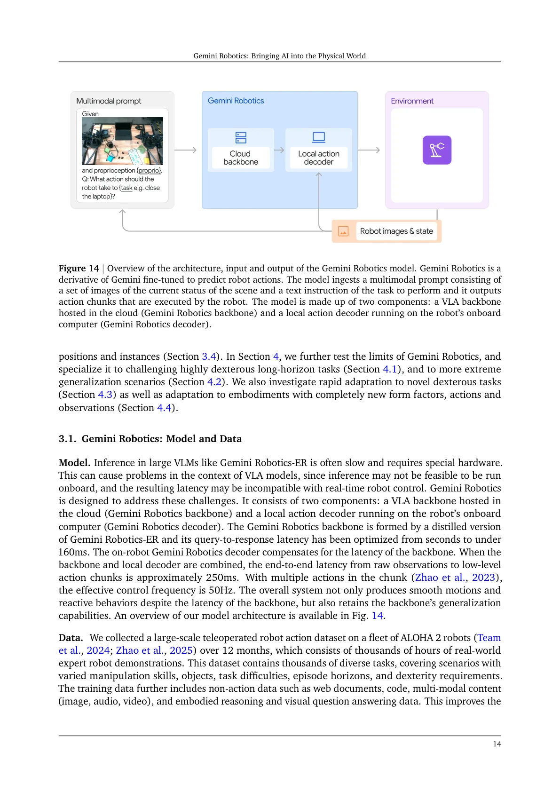
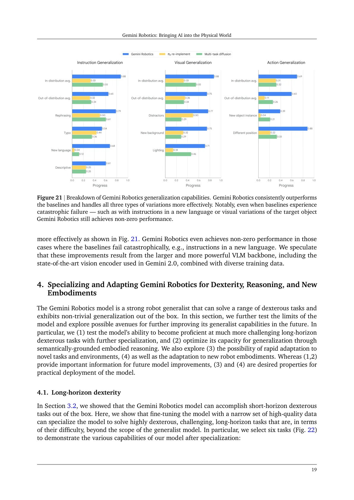
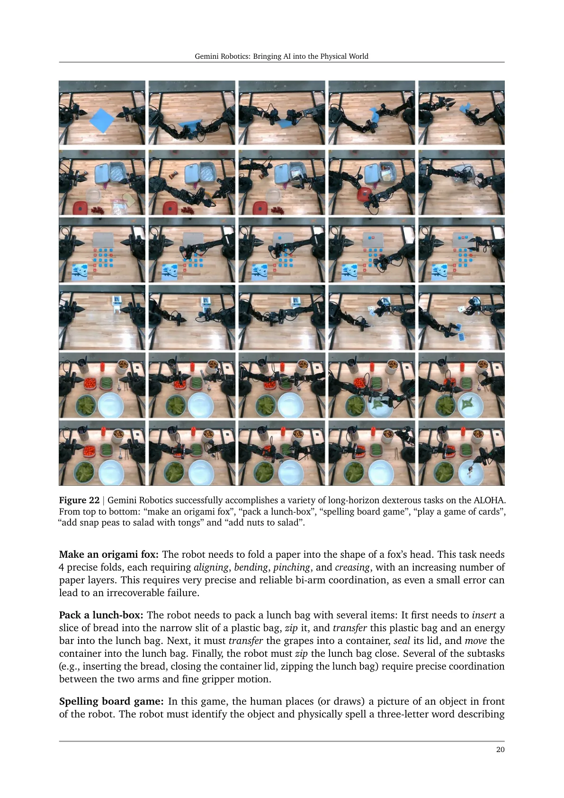
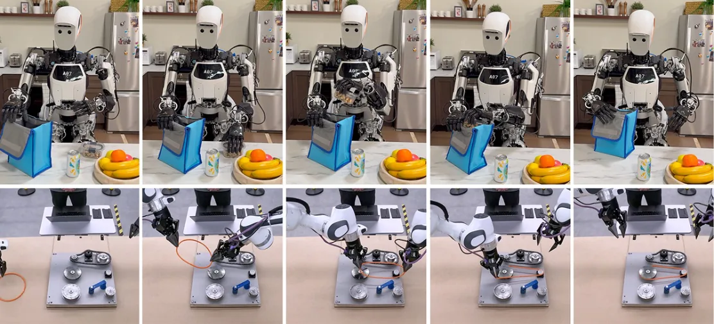

💡速记层 · 思想 / 逻辑 / 方法
默认读完就走的一层——只讲思想、逻辑、方法；效果只作验证。要核对原文/钻细节再看下面的「深读层」。
- 通用机器人需要「具身推理」：感知 3D 结构、理解物体关系、预测动作轨迹——这些能力本质上是 VLM 的能力延伸，不需要从头设计。
- Gemini 2.0 已经具备 2D/3D 检测、pointing、轨迹预测等多项具身推理原生能力；Gemini Robotics-ER 进一步强化这些能力，使零样本机器人控制成为可能。
- 但纯 VLM 做机器人控制存在根本限制：中间转换步骤（感知→规划→代码→执行）引入延迟与误差，精细操作尤其失败。
- 因此需要将具身推理直接接地到低层动作：用 Gemini Robotics-ER 的 distilled backbone + 本地 action decoder，端到端输出动作 chunk。
- 专项化（specialization）时，在强大的 generalist 基础上用少量高质量数据 fine-tune，可以解锁极端灵巧和长流程任务——直接从头训练则完全失败（0% 成功率）。
Gemini Robotics 在 20 个灵巧任务上显著超过 π0 re-implement 和 multi-task diffusion baseline；专项化后 lunch-box packing（2 分钟长流程）100% 成功；fast adaptation 在 7/8 任务中 ≤100 次示范即达 70%+；reasoning-enhanced 版在需要语义/空间推理的 OOD 场景提升明显。
展开具体数字
- ERQA benchmark：Gemini 2.0 Flash 46.3，Pro Experimental 48.3（无 CoT），CoT 后升至 50.3 / 54.8，均为当时 SOTA。
- 零样本控制（ALOHA 2 仿真）：Gemini 2.0 Flash 27%，Gemini Robotics-ER 53%（几乎 2 倍）。
- 少样本控制（10 次 in-context demo）：Gemini Robotics-ER 仿真 65%，真实机器人 65%。
- 泛化 benchmark（85 任务）：Gemini Robotics 在所有三类（视觉/指令/动作）变体下均最优；在新语言指令下基线崩溃而 Gemini Robotics 非零。
- 专项化成功率：origami fox 45%，lunch-box 100%，spelling game 83%（baseline 0%）。
- 3D detection SUN-RGBD AP@15：Gemini Robotics-ER 48.3，优于所有专家模型。
- 新本体（bi-arm Franka）平均成功率 63%，视觉/动作泛化明显超过 single-task diffusion。
Track A（人形/移动操作 VLA）强相关：Gemini Robotics 是目前最强闭源 VLA 之一，云端 backbone + 本地 decoder 的架构、ER 具身推理先验、embodiment 适配方案均与人形机器人操作 VLA 研究直接相关。文中 Apollo 人形机器人适配实验（Section 4.4）尤其值得关注。
Track B（足式算法）不相关——本文完全聚焦 manipulation，不涉及 locomotion / 底盘控制。
◆核心观点 · 证据
每条 = 中文论点 + 📍真实页码/节 + 🔤逐字原文(Ctrl-F 锚点) + 🀄译文 + 💡解读。

This report introduces a new family of AI models purposefully designed for robotics and built upon the foundation of Gemini 2.0. We present Gemini Robotics, an advanced Vision-Language-Action (VLA) generalist model capable of directly controlling robots.
This endeavor hinges on two fundamental components. First, Gemini needs to acquire robust embodied reasoning, gaining the ability to understand the rich geometric and temporal-spatial details of the physical world. Second, we must ground this embodied reasoning in the physical world by enabling Gemini to speak the language of physical actions, understanding contact physics, dynamics, and the intricacies of real-world interactions.
Gemini Robotics-ER achieves good performance across a range of different tasks in both settings, and we find that especially zero-shot robot control performance is strongly correlated with better embodied understanding: Gemini Robotics-ER, which has received more comprehensive training to this end, improves task completion by almost 2x compared to Gemini 2.0.

The Gemini Robotics backbone is formed by a distilled version of Gemini Robotics-ER and its query-to-response latency has been optimized from seconds to under 160ms. The on-robot Gemini Robotics decoder compensates for the latency of the backbone. When the backbone and local decoder are combined, the end-to-end latency from raw observations to low-level action chunks is approximately 250ms. With multiple actions in the chunk (Zhao et al., 2023), the effective control frequency is 50Hz.
We find that the Gemini Robotics model is proficient at half of the tasks out of the box with a success rate exceeding 80%. Notably, our model excels at deformable object manipulation ( "fold pink cloth", "wrap the wire around the headphone"), while the baselines struggle with these tasks. For the more challenging tasks, (e.g., "open pink folder", "insert red block", "wrap the wire around the headphone"), we find that Gemini Robotics is the only method that can achieve non-zero success, highlighting that a combination of a high-capacity model architecture along with high-quality diverse data across all modalities (vision, language, and action) is essential for multi-task policy learning.

Gemini Robotics consistently outperforms the baselines and handles all three types of variations more effectively as shown in Fig. 21. Gemini Robotics even achieves non-zero performance in those cases where the baselines fail catastrophically, e.g., instructions in a new language. We speculate that these improvements result from the larger and more powerful VLM backbone, including the state-of-the-art vision encoder used in Gemini 2.0, combined with diverse training data.

when we directly train the Gemini Robotics specialist model from scratch using the specialization datasets, we find that it is unable to solve any of these tasks (0% success rates across the board, and plot not included in Fig. 23), suggesting that in addition to the high-capacity model architecture, the representation, or the physical common sense, learned from diverse robot action datasets in Section 3 is another key component for the model to specialize in challenging long-horizon tasks that require a high level of dexterity.
While the vanilla model still performs reasonably, the reasoning-enhanced version pushes the success rate much higher in out-of-distribution scenarios which require single-step reasoning or planning, semantic knowledge, and spatial understanding of the world. Additionally, beyond improvements in the model's ability to deploy its skills in novel settings, we also see increased interpretability as the model can output intermediate steps that closely resemble the human-interpretable embodied reasoning traces of Gemini Robotics-ER

For 7 out of 8 tasks, fine-tuning was effective at achieving success rate above 70% with at most 100 demonstrations (equivalent to 15 minutes to 1 hour of demonstrations depending on the complexity of the task).
Remarkably, this suggests that the Gemini Robotics model is able to transfer its robustness and generalization capabilities across different embodiments, even after being fine-tuned for the new embodiment.
⎘开源状态
Gemini Robotics 系列属 Google DeepMind 商业产品，基础模型闭源，仅通过 API 提供受限访问。
- 代码
- 未开源 Gemini Robotics / Gemini Robotics-ER 推理/训练代码未公开
- 权重
- 未开源 模型权重不公开，通过 trusted-tester 或 Google Cloud API 访问
- Benchmark
- 已开源 ERQA benchmark: github.com/embodiedreasoning/ERQA（400 题 VQA）
- 数据
- 未公开 ALOHA 2 数千小时遥操作数据为内部数据集
论文发布时（2025-03）模型通过 trusted-tester 计划访问，后续计划通过 Google Cloud API / Gemini SDK 提供。基础 Gemini 2.0 模型本身可通过 Google AI Studio 和 Vertex AI 使用，但机器人专用能力（ER / VLA）需额外申请。ERQA benchmark 和提示示例代码已在论文中链接并开放。
We also introduce Gemini Robotics-ER, a version of Gemini 2.0 Flash that has enhanced embodied reasoning. These can be used in robotics applications without the need for any additional robot-specific data or training.
⚖批判 · 评级
这是目前最完整的 frontier VLM → VLA 技术路线报告：① ER → VLA 两级架构清晰，每层能力有独立评测支撑；② 云端 backbone + 本地 decoder 的低延迟方案工程细节翔实，可供人形机器人系统设计参考；③ 专项化消融（从头训练 0% vs fine-tune 79%+）以强有力证据钉死了 generalist 预训练的必要性；④ Apollo 人形适配实验是极为罕见的 frontier VLM 接人形机器人的公开记录，说明该路线对 Track A 研究的可行性已有实机验证。
① 全部闭源：Gemini Robotics 的权重、训练代码、ALOHA 2 数据集均不公开，社区无法复现或在此基础上研究，影响学术价值；② 评测高度自建：大量实验在自建数据集和 benchmark 上，外部可验证性有限；③ 人形适配实验（Section 4.4）仅"preliminary experiments"——成功率数字在 Appendix，无详细失败分析；④ 论文是 tech report 而非同行评审论文，部分结论（如 ER 对 downstream 控制的贡献）因数据未公开难以独立验证；⑤ 系统依赖云端推理，网络延迟和稳定性在实际部署中是额外的工程挑战，文中未深入讨论。
评级：Important 技术路线新颖且工程完整，但闭源限制了直接复用；理解其架构思路对 Track A 研究有重要参考价值，但无法在此基础上直接开展开源研究。